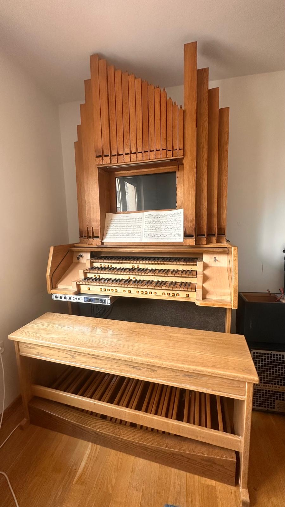

Summary
Senior Software Engineer with experience designing and building cloud-based systems, microservices, and API platforms. Focused on reliability, scalability, and delivering production-ready software. Experienced across the stack—from DevOps to frontend—with particular strength in backend engineering. Recently developed an MVP end-to-end and enjoy working autonomously while collaborating with cross-functional teams.
Experience
Independent contractor (Remote EU - Romania)
Jan 2025 - Feb 2026
- Transitioned into independent contracting to explore diverse projects and clients.
- Founded and bootstrapped an e-commerce platform MVP that enables entrepreneurs to create and manage online stores; launched at comerz.roLIVE.
multitenant, Rails, Postgresql
- Enjoyed generative AI capabilities: codex, conductor, linear
Senior Software Engineer, Zerofy (Remote EU - Romania)
Jan 2024 - Feb 2025
- Built serverless event-driven workflows with Google Cloud Functions (lambda), Firebase, Node.js (cloud-native on GCP) to support the mobile frontend (Zerofy App LIVE).
- Integrated external vendor APIs, including reverse-engineered interfaces when documentation was unavailable.
- Reduced technical debt through targeted refactors and cleanup.
Senior Software Engineer, PTC Schweiz (Zürich and Remote EU - Romania)
Oct 2015 - Jan 2024
-
Built, owned and operated Vuforia Cloud microservices (Scala, Akka) for manufacturing
Augmented Reality productsLIVE on AWS
.
- Collaborated strongly with Machine Learning engineering Team to integrate models into production APIs and containerized services; collaborated with testing and support teams
- Implemented end-to-end automated tests in Scala to strengthen the reliability of REST APIs reducing on-call incidents.
- Developed CI/CD pipelines with GitHub Actions and TeamCity.
- Delivered major refactors and contributed to internal deployment tooling.
- Led initiatives to develop internal tools that improved developer productivity across multiple teams.
- Integrated static analysis tools like Veracode and Snyk into the development workflow to enhance code security and quality.
- Implemented security best practices across services after completing multiple security training programs throughout the years (owasp, remote).
- Implemented Single Sign On auth with Amazon Cognito.
- Contributed to monitoring and observability initiatives (Elasticsearch, Logstash, Kibana).
- Authored API documentation using OpenAPI v3.
- Implemented WebSocket (proxy) service for real-time collaboration services app (remote assistance, Chalk) .
- Conducted technical interviews and contributed to engineering hiring decisions.
Senior Engineer, Qualcomm (Zürich, Switzerland)
Jan 2014 - Oct 2015
- Expanded cloud services with Scala and Play on AWS.
- Automated operations and built internal tools tasks using Python and Bash.
- Ported services to Docker and maintained legacy Ruby on Rails systems.
- Designed and built an internal Ruby DSL for testing APIs across multiple teams, collaborating closely with those teams.
- Participated in scaling infrastructure from a few to hundreds of EC2 instances on AWS. (S3, SQS, DynamoDB, Cognito, Autoscaling)
Software Engineer, Kooaba (Zürich, Switzerland)
Feb 2011 - Jan 2014
- Initiated and led the move from a monolith to Scala-based microservices → increased scalability and reduced memory usage.
- Built REST APIs and a web backend using Ruby on Rails.
- Rewrote and maintained an Android application.
- Performed MySQL optimizations/ updates on live databases with 30m+ rows.
Head of Technology, Alliants (Cluj-Napoca, Romania)
Sep 2008 - Feb 2011
- Hired and led a small team of 3 engineers delivering Ruby on Rails apps for different customers.
- Coordinated on-site delivery in London.
Skills
Languages: Ruby, Python, Scala, JavaScript, Bash
Frameworks and Libraries: Rails, Akka, Play, Node.js
Cloud and Infrastructure:
AWS,
GCP,
Docker, REST APIs, Oauth2, JWT, SSO
Data and Search: MySQL, Elasticsearch, Kibana
Testing and Tooling: GitHub Actions, TeamCity, LaTeX, Open API, linux, awk, sed
Languages
English (fluent), Romanian (fluent), German (basic), French (basic)
Fun projects
-
I ♥ music. Since 2013 I'm building and evolving a
Virtual Private Organ

(musical instrument). Here's the
initial story. Some Arduino programming on
my github.
-
In 2025, I conducted a small Christmas concerto with our small choir and orchestra.
-
I'm a big fan of
 LilyPond
for engraving sheet music.
LilyPond
for engraving sheet music.
- Bootstrapped and maintained e-commerce solution featuring various API integrations LIVE since 2012.